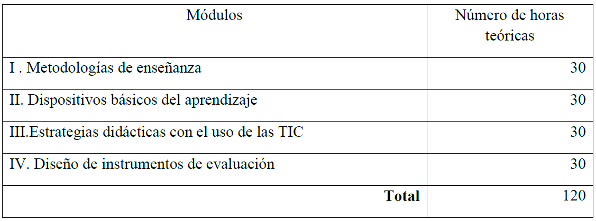

I.Fundamentación del proyecto
Para consolidar las competencias didácticas en docentes, es de gran
importancia conocer e identificar los conocimientos, habilidades y actitudes necesarios
para
planificar, desarrollar, gestionar y evaluar de forma óptima el proceso de enseñanza
aprendizaje. Esto consiste en desarrollar acciones que permitan a sus alumnos adquirir
aprendizajes significativos mediante la organización y aplicación de recursos
didácticos,
impactando en el desarrollo de estrategias didácticas, relacionadas con la formación y
asesoría enfocadas en el aprendizaje.
II.Objetivo general
Ofrecer a los estudiantes los conocimientos y habilidades
necesarias para
planificar, gestionar y evaluar el proceso de enseñanza-aprendizaje, de tal forma que se
atiendan las características personales del alumnado y de las necesidades educativas
particulares.
III.Perfil del egresado
Después de cursar el Diplomado de estrategias didácticas para el
proceso de
enseñanza-aprendizaje el participante será capaz de:
- Generar situaciones de aprendizaje por medio de metodologías acordes a la Nueva Escuela Mexicana
- Incorporar el uso de las tics en la práctica docente para el desarrollo integral de los niños, niñas y adolescentes.
- Identificar la importancia del desarrollo de los dispositivos básicos del aprendizaje
- Diseñar estrategias de evaluación de acuerdo con las necesidades de sus estudiantes
- Elevar la calidad del proceso de enseñanza de los profesionales de la educación.
IV.Mapa curricular

V.Requisitos de ingreso permanencia y egreso
Requisitos de ingreso permanencia y egreso para la obtención del
diploma.
Requisitos de ingreso
- a) Acta de nacimiento
- b) CURP
- c) INE
- d) Comprobante de domicilio
- e) Copia de título de la licenciatura relacionado con el área de la educación
- f) Copia de la cédula profesional de licenciatura.
- g) Llenar la solicitud de inscripción
- h) Cubrir la cuota de inscripción
- a) Cubrir los requisitos de evaluación de cada módulo en tiempo y forma.
- b) Cubrir los productos de cada módulo
- c) Cubrir los pagos parciales correspondientes.
- d) Asistencia de 120 horas
- a) Haber acreditado cada uno de los módulos que integran el diplomado.
- b) Haber cubierto todos los pagos correspondientes.
- c) Haber cumplido con la entrega de la documentación requisitada.
VI. Programa por Módulo
Metodologías de enseñanza
Para el logro de los propósitos del curso se trabajará con la modalidad de
Seminario-Taller,
debido a que propicia la construcción de conocimientos mediante el diálogo, la
discusión, el
análisis y la reflexión entre los estudiantes. emplear esta modalidad permite que se
desarrollen y favorezcan las habilidades intelectuales relacionadas con el pensamiento
crítico, la búsqueda de información, la argumentación, la toma de decisiones, la
transferencia de aprendizajes, entre otras.
VII. Mecanismos y criterios de evaluación
En congruencia con el enfoque del diplomado la evaluación se
reconoce como
un proceso de recogida de evidencias que permite emitir juicios de valor, sobre el
desempleo
del estudiante con respecto al desarrollo y el nivel de logro de su aprendizaje (Maria
Sonsoles, 2017).
Por lo tanto, se propone una evaluación formativa, permitiendo valorar permanentemente
las
acciones, los avances y los conocimientos que los estudiantes adquieran a medida que se
desarrolla el curso, permitiendo incorporar paulatinamente sus conocimientos previos con
los
nuevos.
VIII. Cupo mínimo y máximo de participantes por grupo
Para la apertura del diplomado se requiere de un mínimo de 15 alumnos
por
grupo y un máximo de 20 garantizando una atención personalizada para la adquisición de
los
aprendizajes.

IX. Recursos materiales requeridos para la operación del plan de estudios
Salón para 15 alumnos
- Mesas y sillas
- Proyector
- Escritorio
- Internet
- Línea telefónica
- Marcadores de colores
- Computadoras individuales y para la administración.
- Cuadernillo de sugerencias metodológicas para el desarrollo de proyectos metodológicos
- Lecturas por módulo
- Fotocopias
- Impresora
- Memorias USB
- Cable HDMI
- Televisión
Recursos Humanos
Julieta Esparza Jiménez
Lic. en Educación Especial Área de Atención Motriz de la Escuela Normal de Ecatepec (ENE), Maestría en Educación por la Universidad Tecnológica de México (UNITEC). Cinco años de servicio en educación básica en el Gobierno del Estado de México, en funciones de docente de aprendizaje en la Unidad de Servicios de Apoyo a la Educación Regular (USAER) a nivel primaria y preescolar. Diplomado en Competencias Docentes para la Alfabetización Digital.
Deicy Lozano Santiago
Lic. en educación secundaria, con especialidad en Biología,
Normal
Superior del
Estado de Hidalgo, Maestría en educación y valores, Instituto Tecnológico de Educación Superior
(ITES). Diecinueve años de servicio en educación básica en el Nivel de Telesecundarias en el estado
de Hidalgo, trece años con funciones docentes y seis años con función directiva. Diplomado de vida
saludable. Apoyo técnico en la supervisión escolar de la Zona 25 de Telesecundarias, Cardonal
Hgo.